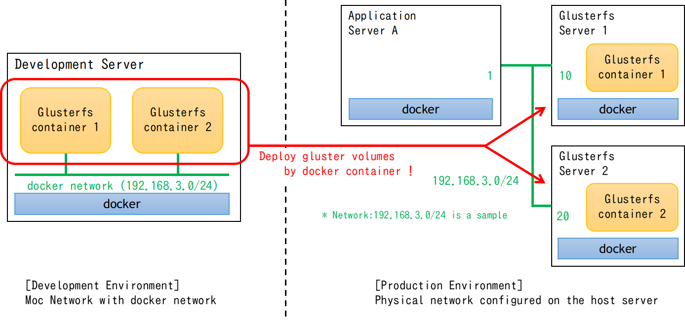
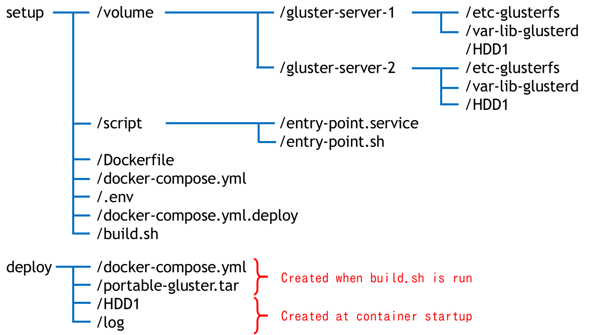
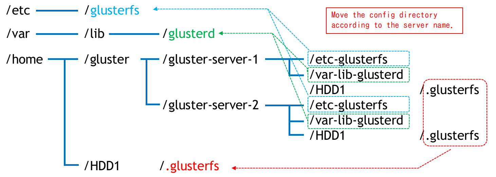

ポータブルGluster
このリポジトリには、2つのレプリカを持つGlusterfs containerのDockerイメージを作成するツールが含まれています。

目次
依存関係
- このツールは、以下のソフトウェアを使用します。
- docker and docker-compose
- bash
- envsubst
使い方
ディレクトリ構成

設定
- 本ツールでは、setup/.envファイルに定義することで、以下のパラメータ名を変更できます。
- NETWORK_ADDR : 製品環境のネットワークアドレス
- HOSTNAME_1 : Gluster-container-1のホスト名
- IP_ADDR_1 : Gluster-container-1のIPアドレス
- HOSTNAME_2 : Gluster-container-2のホスト名
- IP_ADDR_2 : Gluster-container-2のIPアドレス
- VOLUME_NAME : Glusterのボリューム名
ビルド
- setupディレクトリに移動後、以下のようにbuild.shを実行してください。
- build.shのオプションは-h（または--help）を引数に実行すると確認できます。
AAAAA:BBBBBはdocker image:tagのことです。- build.sh実行後、deployディレクトリにdocker image (portable-gluster.tar) デプロイ用docker-compose.ymlが生成されます。
cd [setup directory]
./build.sh -t AAAAAA:BBBBBB
デプロイ
- デプロイディレクトリの下にあるものを、本番環境の任意のディレクトリに転送します。
- setupディレクトリに移動した後、deployディレクトリにあるdockerイメージを読み込みます。
- dockerコマンドが使えるユーザで実行すること。
- docker iamgeをロードしたら、次のようにdocker containerを起動します。
- 2つのサーバで同時に実行してください。
- 起動ログはlogディレクトリに出力されます。
$ cd [deploy directory]
$ docker image load -i portable-gluster.tar
-- in the server 1 ----------------------------------
$ docker-compose up -d gluster-server-1
-- in the server 2 ----------------------------------
$ docker-compose up -d gluster-server-2
備考
- Gluster containerは、下図のように起動時にcontainer内のGlusterfs設定ディレクトリを指定した場所に移動する。

ライセンス
このツールはWTFPLでリリースされています（LICENSE参照）。